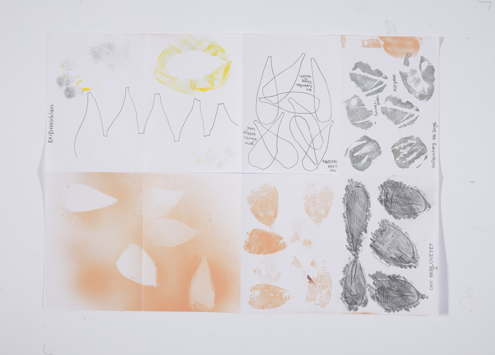
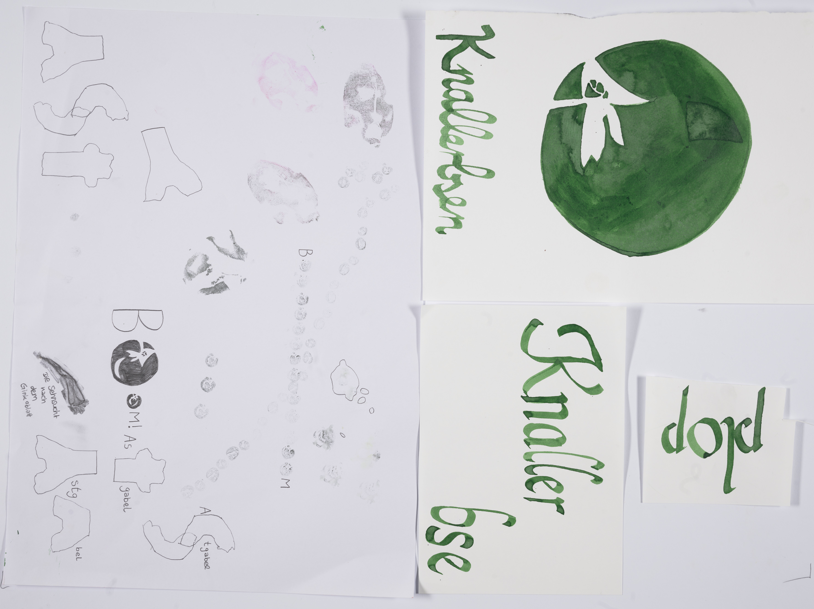
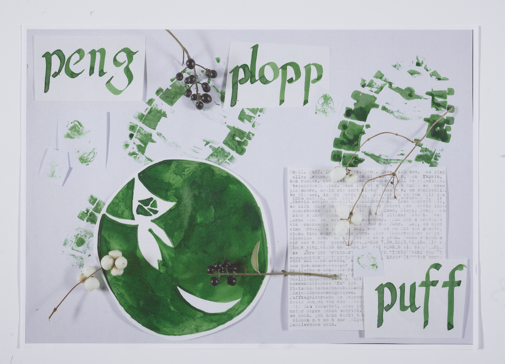
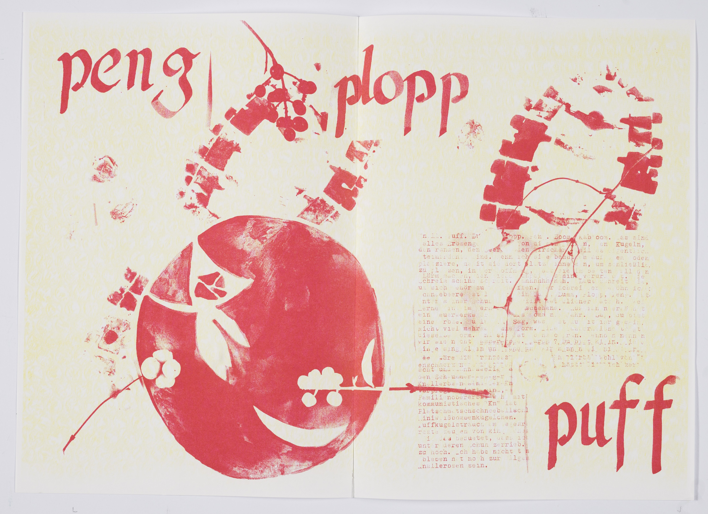
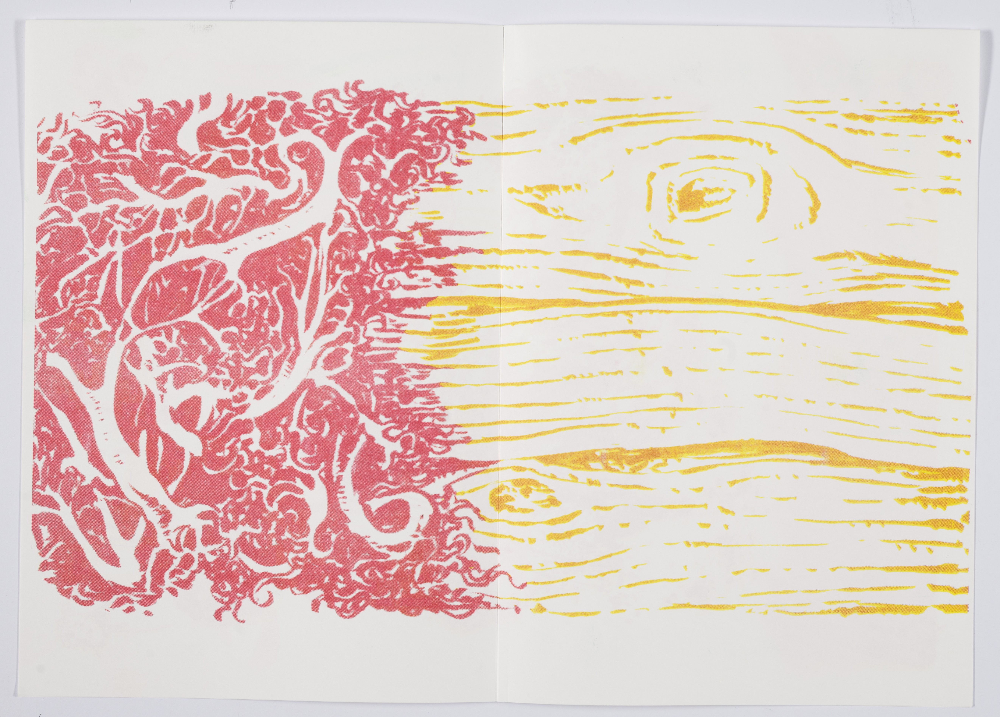

digitale grundlagen
DOKUMENTATION
Lena Buchmann
Gorch-Fock-Str.7
38104 Braunschweig
l.buchmann@hbk-braunschweig.de
Matrikelnummer: 80302
5 — tools and print
Part I: the collection
Collecting does not come easy to me. Oftentimes it interferes with a certain sense of minimalism, a wish for usefulness of things, and the urge for a clean space. I collect stamps that do not take up space. I collect socks, but I wear them all the time and I will get rid of old ones. I do not like to accumulate things. So when we decided to collect shadows and organic structures, photos were the natural way. But once we were back at uni, something more physical would have been useful. I found it hard to come up with what to collect. Later, some ideas came to me. I would have liked to collect words that have different meanings and then maybe collect the meanings of those very same words. I would have liked to collect fruit stickers or an alphabet. I would have liked to collect something that sparks my interest a little more and is a little less infinite.

Part II: the concept
Coming up with a concept was difficult. In hindsight, I should have talked to the others more. I would have liked more of a roter Faden in our project. I liked the individual parts of it, but it just did not feel cohesive.
I did some sketches and experimenting and then my interest stuck at Symphoricarpos albus.

For the inlay I focused on Symphoricarpos albus, a plant that makes nice plop sounds when stepped on. I made a collage from some of my sketches and experiments and used the repro camera to digitalize. Then I scanned the photograph and tried rastering the whole thing.



Part III: the printing
Risoprinting was really fun, and I am happy I got to learn this technique this way. It was way easier in a group because you faced every difficulty together.
